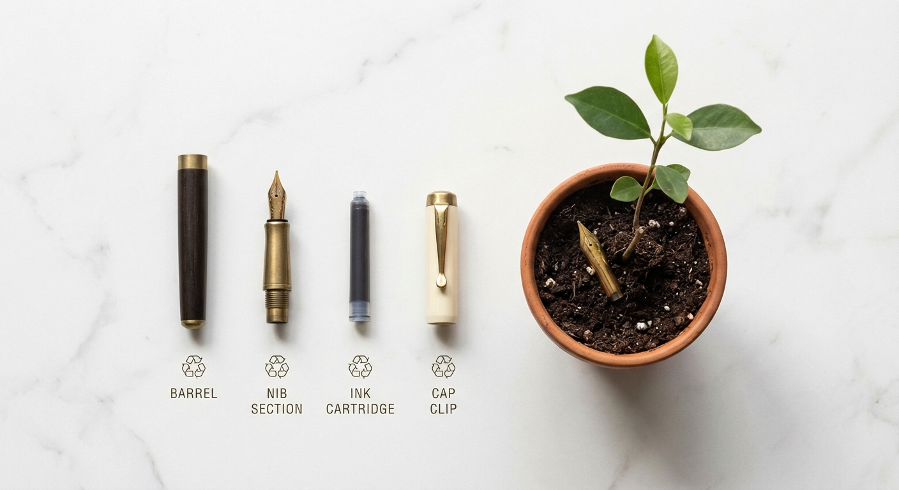
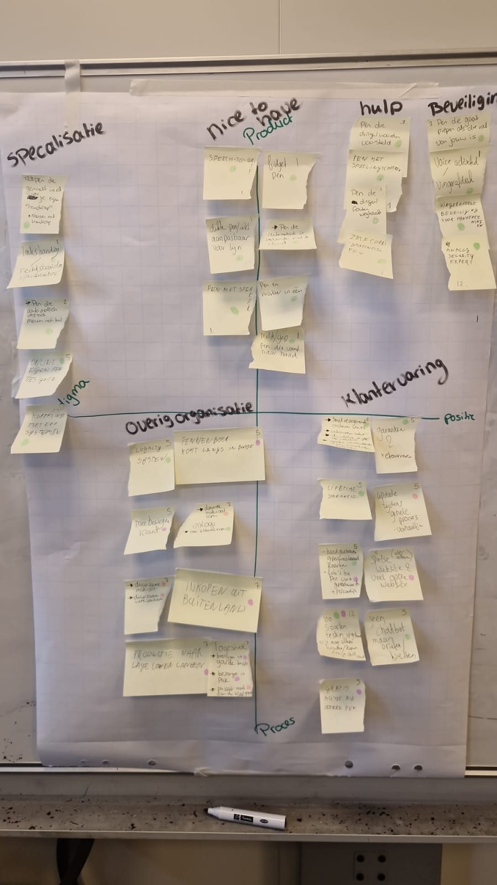

Nederlandse producent van pennen, potloden en creatieve materialen. 125+ jaar historie. De markt krimpt structureel, maar er liggen kansen.
Welke rol kan Aurora spelen in een wereld die steeds digitaler schrijft?
Anke, Lianne & Jr · EDIM.21

Wat hebben we gedaan?
Scenariomatrix
Stabiel, weinig druk
Grootste kans
Boiled frog
Existentieel risico
↑ actief beleid | ↓ laissez-faire
Uit dit onderzoek kwamen twee denkrichtingen die in meerdere scenario's werken.
Merk (12): Aurora's 125 jaar heritage inzetten als vertrouwensmerk. Oplossingen (3): een concreet probleem oplossen, namelijk de vervalsing van handtekeningen.
Waarom? Uit sessie 1+2 kwam de dream "beveiligde pen tegen fraude via vingerafdrukherkenning", dat vonden we zelf verrassend. In sessie 3 werd Beveiliging een eigen kamer op de radar met 4 ideeën. Het past bij de scenario's: in D wordt analoge verificatie juist waardevoller, in B kan regelgeving het verplichten.

Sessie 3: Beveiliging
Sessie 1+2: Empathise
Een pen die bewijst wie er geschreven heeft
Hoe zouden we een pen kunnen ontwikkelen die via biometrie bewijst wie er geschreven heeft, zodat een handtekening op papier net zo veilig wordt als een digitale?
Platform (2): modulair ontwerp, vervangbare onderdelen, hervulbaar systeem. Merk (12): duurzaamheid en ketentransparantie als merkbelofte.
Waarom? In sessie 1 kwam de gripe "pennen kwijtraken, niet duurzaam, massaproductie". Bij Gate 0 was duurzaamheid en ethische productie een kernthema. Op de radar kwamen "duurzame materialen" en "duurzame grondstoffen" als ideeën. In scenario B (actief overheidsbeleid) wordt dit de sterkste positie: regelgeving als voordeel.
Sessie 3: Organisatie
Sessie 3: Klantervaring
Cross-industry inspiratie
Duurzaamheidsregels als voordeel, niet als kostenpost
Hoe zouden we Aurora kunnen laten voorlopen op duurzaamheidsregels, zodat strengere wetgeving concurrenten raakt maar Aurora juist sterker maakt?